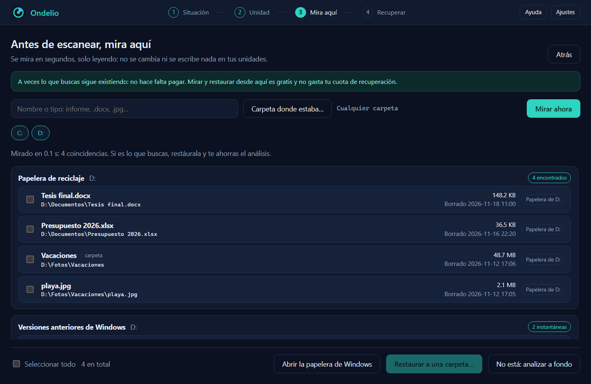
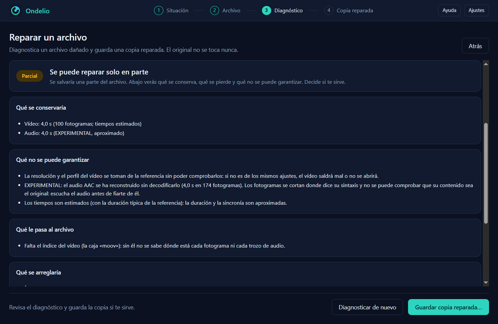
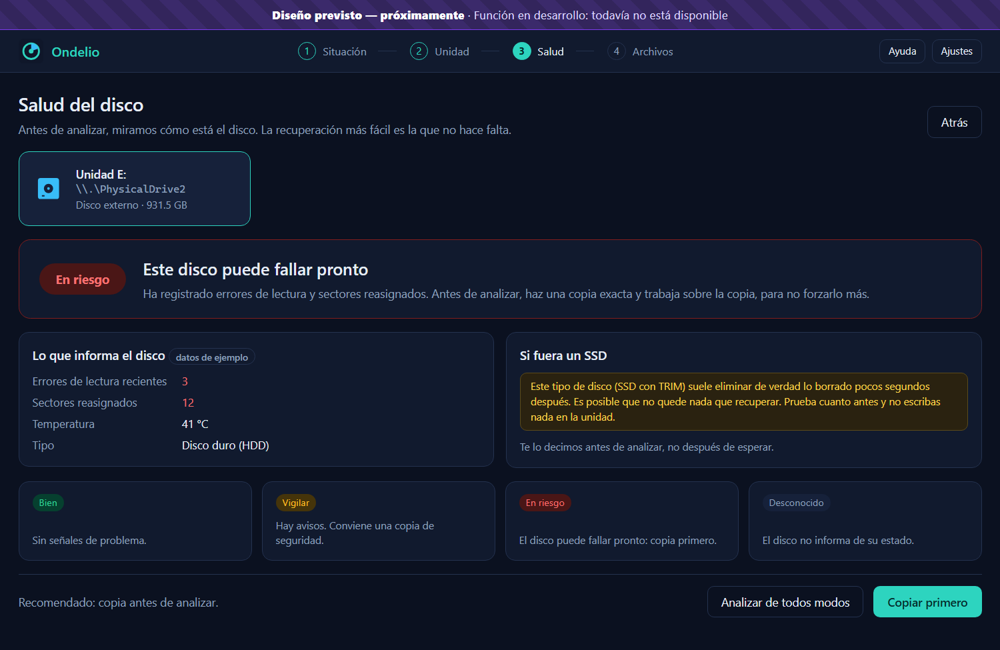

Get back what you thought was lost.
Ondelio finds deleted files on your drive, USB stick or memory card, tells you honestly which ones can be fully recovered, and never writes to the drive you are rescuing.

Built to do no harm
When you lose files, the worst thing is to make it worse. Ondelio is built on three non-negotiable principles.
Read-only
The drive you scan is always opened read-only. Recovered files are never saved to that same drive.
No false promises
Every file gets a verdict: intact, uncertain or damaged. You know what to expect before you pay anything.
Everything stays on your PC
Ondelio never uploads your files. Scanning, preview and recovery all happen on your computer.
Ondelio Sense: on-device AI
A small artificial intelligence model built into the program recognises what kind of data each fragment of the drive holds, to find and sort your files better. It works offline, was trained only on public, licensed files, and never learns from your files or sends them anywhere.
Features
One app for the most common data-loss situations.
Before you scan, look here
Many “lost” files still exist. In seconds, Ondelio checks the Recycle Bin, Windows previous versions, File History and your cloud folders. Restoring from there is free.

Recover deleted files
Deleted with Shift+Delete, emptied Recycle Bin, formatted drive or lost partition. NTFS, FAT and exFAT, with a preview before recovering and signature-based rescue of more than 20 formats when the file system is gone.

Copy a failing drive
When a drive starts failing, every read counts. Ondelio first makes an exact copy, skips damaged areas to come back to them later, can pause and resume, and checks the copy with its SHA-256 fingerprint. Then you recover from the copy without stressing the drive.

Repair damaged files
JPEG and PNG photos, Word, Excel and PowerPoint documents, ZIP archives and MP4/MOV videos, including phone videos that were cut off while recording. The diagnosis is free and tells you what would be kept and what would not. The original is never modified: a repaired copy is always saved.

Secure erase
Overwrites files, folders or free space and checks it by reading it back. You get an erase report that tells you clearly when an erase cannot be verified, as happens on SSDs and USB sticks.

Drive health and USB sticks
Before scanning, Ondelio will check what the drive reports about its own health and warn you if you should copy it first. Plus a dedicated section for USB sticks and memory cards: the ones that ask to be “formatted”, old camera cards and camera RAW photos.

Forensic mode
Cases and chain of custody, E01 images, timeline, Windows artifacts, keyword search and expert report.
Unsaved document
Finds the copies Office and Windows keep when a program closes without saving.
Ondelio Guard
Optional preventive protection that makes a future recovery far more complete.
Clone and erase whole drives
Drive-to-drive cloning and full-drive erase, with typed confirmation and never on the system drive.
Free to check, paid for the result
We never charge for what keeps you from losing data. You can see what can be recovered before paying anything. Purchases are made securely through the Microsoft Store.
| Free | Paid add-ons |
|---|---|
| Scan and preview what can be recovered | Unlimited recovery |
| Recover up to 500 MB in total, to check that it works | Save repaired files |
| “Look here”: restore from the Recycle Bin and previous versions | Drive-to-drive copy |
| Copy a drive to an image and verify it | Erase whole drives |
| Diagnose damaged files | Forensic mode |
| Securely erase files and free space |
Prices will be shown in the Microsoft Store in your currency, taxes included. See the payment terms and the refund policy.
What no program can do
Overwritten data: if something new was saved on top of it, the old data no longer exists.
SSDs with TRIM: on most modern SSDs, Windows tells the drive when files are deleted and the drive clears those areas shortly after. Files deleted on an SSD usually cannot be recovered. Ondelio tells you before scanning.
Tip: stop using the drive as soon as you notice the loss and do not install anything on it.